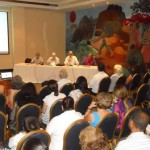

Par: Camilo García Lopez-trigo.


Al darles la bienvenida el Director del Festival, Alex Pausides, habló en nombre de la Red de Festivales de Poesía de América Latina y el Caribe y del Movimiento Poético Mundial a favor de la Paz y resaltó la trascendencia histórica que tiene este hotel en el devenir de la Revolución y en momentos trascendentales de la conformación de la cultura nacional.
Al indicar que “la poesía es el estado natural del espíritu”, destacó que la acción poética puede servir como un instrumento vital para configurar un mundo vivible y en armonía. “Los poetas vivimos el desafío de las mayorías silenciadas… y si el pueblo lo hace, los poetas debemos estar junto a ellos”, expresó convencido.
Como tareas inmediatas de la red señaló la necesidad de explorar vías de cooperación entre los diversos proyectos allí reunidos, planificar con realismo lo posible dentro de lo necesario, realizar acciones propias o concertadas en función de la paz y la solidaridad, sustentar proyectos en todos los soportes posibles, Parmi d'autres, siempre con una visión democratizadora de la cultura y del saber para defender la unidad en el más absoluto respeto a la diferencia.
Destacó la importancia de que la poesía sirva a los demás –y a nosotros mismos– en la creación y el goce de la belleza que la naturaleza nos brinda, pero desde un sentido comprometido. “Convencidos de la potencialidad de las palabras, los poetas podemos ser parte de la solución”, culminó.
Al poeta colombiano Fernando Rendón, Premio Nobel Alternativo y Director del Festival Internacional de Poesía de Medellín, le correspondieron las palabras inaugurales y alabó ante todo la paz verdadera y profunda que se vive en La Habana, junto a la certeza del camino que están recorriendo los cubanos como un ejemplo para que los pueblos de Nuestra América puedan alcanzar su libertad e independencia, junto a valores sagrados como la solidaridad.
Compartió su preocupación por lo que sucede en la actualidad en Colombia, que ha vivido en guerra la inmensa mayoría de la historia de su República, y ello ha significado una persecución contra los artistas e intelectuales más progresistas. En ese sentido, destacó que el Festival Internacional de Poesía de Medellín se ha convertido en un foro de resistencia espiritual y cultural que es emblemático para la lucha que deben librar los poetas en todas partes.
Por eso consideró que la acción debe estar encaminada a salir de los espacios cerrados, de los consumidores eruditos, y lograr que la poesía prenda en el corazón del pueblo, en el alma de cada individuo. “Esa es la fuerza movilizadora del espíritu humano”, señaló, y pidió que como resultado del encuentro se lograra, más que una declaración, un compromiso práctico para la acción a favor de la paz en Colombia, en Venezuela y en toda Latinoamérica.
Otra intervención destacada fue la de Omar González, coordinador del capítulo cubano de la Red en Defensa de la Humanidad, quien hizo una explicación detallada de la historia, el surgimiento y desarrollo de la red, sus principales ejes temáticos y las acciones que ha desarrollado en la última década.
Resaltó su forma de organización horizontal, transversal y representativa –que recorre a la sociedad en todos sus estratos y va contra las discriminaciones de todo tipo–, así como el importante papel que ha jugado la red en su primera etapa como factor movilizador de la opinión pública a favor de los procesos progresistas en Latinoamérica.
Indicó que, aujourd'hui, la red está necesitada de revitalización, aumentar la representación de jóvenes que sean capaces de movilizar las conciencias, defender las ideas –un concepto tan necesario de retomar– frente al efecto simplificador y desmovilizador que ha implicado la globalización neoliberal. Señaló además el reto que significa el uso de las nuevas tecnologías en este empeño y el papel que puede jugar la poesía como expresión espiritual del ser humano.
A partir de ese momento, se abrieron los micrófonos para el intercambio con el numeroso público asistente, bajo la coordinación del destacado poeta cubano Waldo Leyva. De sus reflexiones se le escucharon importantes ideas como que “se impone la acción a través de la palabra –que es nuestra arma principal– por encima de cualquier discrepancia, porque de lo que se trata es de salvar a la humanidad”.
Tomaron el micrófono varios poetas extranjeros, como el mexicano Yuri Zambrano quien –con pasión e inteligencia– desarrolló su certeza de la necesidad del “activismo poético”, un arma fundamental para la lucha enérgica contra toda acción que atente contra la vida, la integridad y la salud de nuestros pueblos. “Todo poema es activismo por naturaleza”, expresó con pasión, y debe tener el poder de transformar nuestros sueños en realidad a través del oficio de la palabra. “Comprometernos o no comprometernos, esa es la cuestión”, mis en évidence.
Al finalizar el encuentro, a partir de una propuesta de la poeta colombiana Patricia Ariza, los asistentes aprobaron una declaración final con el nombre Manifiesto por la paz en Colombia (se reproduce a continuación) que recoge una de las principales preocupaciones expresadas por los presentes y, en la práctica, se convierte en una acción concreta de poetas por la paz.
Aparecen a continuación del Manifiesto las personas que le han firmado. Si desea incorporarse a esa lista, puede visitar los siguientes sitios:
http://
http://www.palabradelmundo.